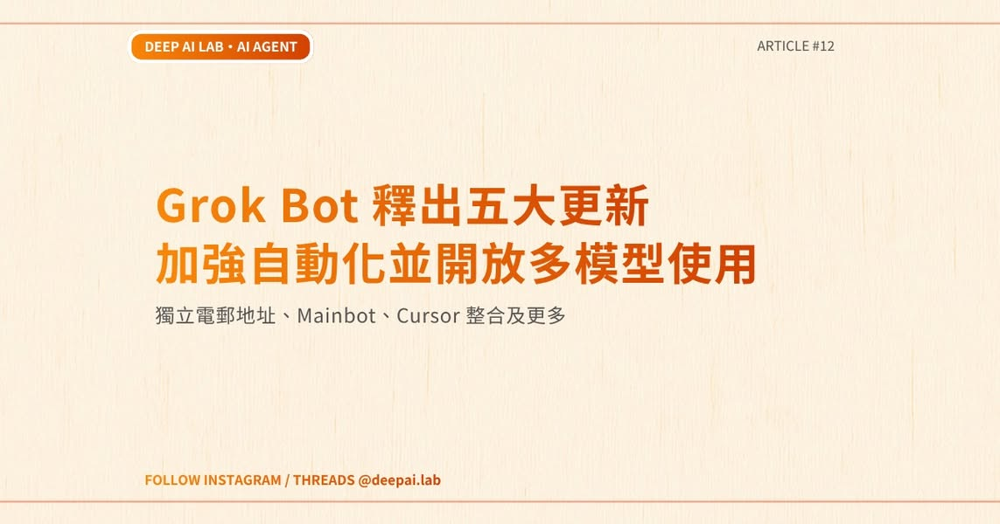
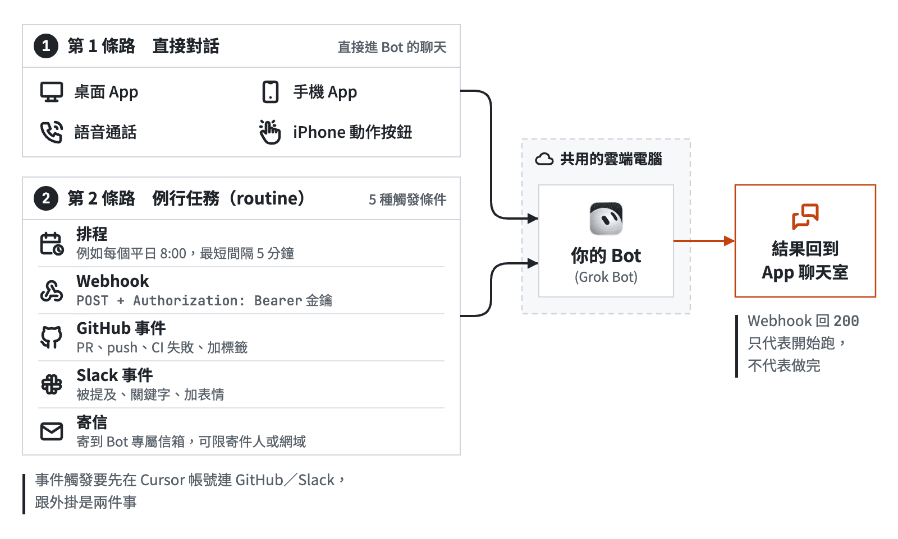
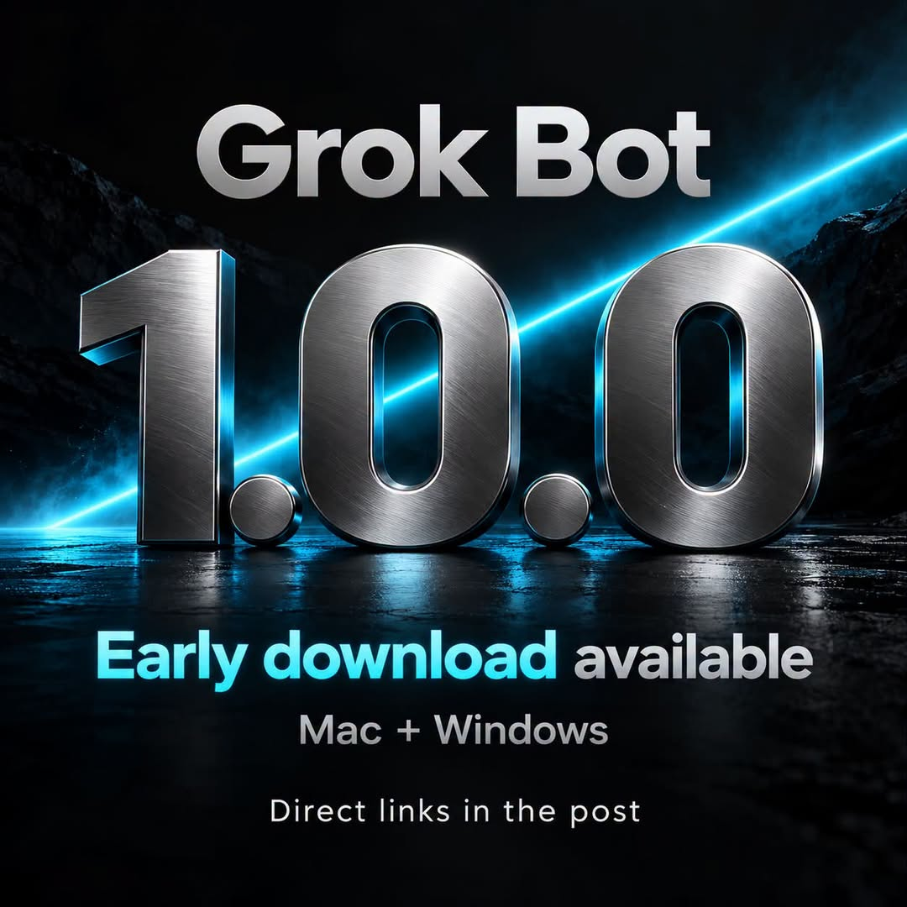

AI郵報｜Grok Bot 的雲端電腦與多 Agent 艦隊：效率承諾背後的共享權限邊界

一句話摘要
Grok Bot 的重點不只是更會聊天，而是讓 agent 擁有一台可持續運作、可由人類隨時接手的雲端電腦；真正的落地門檻則是權限隔離、可觀測性與把多 agent 產出收斂成可驗證工作成果的治理能力。
文章在談什麼
AI郵報以「終結對話框奴役」為主題，解析 Grok Bot 官方 Guides 對常駐型 agent 的描述：使用者可透過訊息交辦工作，agent 則在雲端電腦上操作桌面、瀏覽器、檔案系統和 terminal，關閉自己的筆電後仍可繼續執行。文章特別整理工程團隊以外層協調 agent 管理工作脈絡、內層 coding agent 處理程式任務的做法，並延伸到客服、產品、GTM 與設計情境。
它提出的核心組織觀點是：大規模 agent 協作不能只靠模型能力，還要用固定節奏的 1:1、任務資料庫、夜間稽核、postmortem 與可重用 template，處理上下文遺忘、品質漂移與任務交接問題。
官方可確認的 Grok Bot 能力
Grok Bot 101 官方指南（2026-09-11）將產品描述為「an agent with a computer」：
- 每個使用者可透過 bot 視窗連進一台雲端電腦；環境包含桌面、檔案系統、terminal 與 app，使用者可像遠端桌面一樣直接操作。
- Bot 能依錄製流程或文字 prompt 執行任務；官方範例包括比價、整理公開資訊與把工作接到其他 agent。
- 當任務遇到 CAPTCHA、2FA、密碼或 API key，bot 可以把桌面交還給人類，或要求使用者填寫安全表單。
- Bot 基本設定以 Name、Title、Description 三欄定義，並可搭配 routine、trigger 和 Allow／Deny 類規則。
- 最關鍵的安全限制是：同一帳號下某個 bot 已登入的網站，其他 bot 也能碰到該登入態。Bot 名稱並不代表安全隔離。
Grok Bot for Engineering 官方指南（2026-09-10）則展示以多個工程 bot 管理 cloud agent、共同 Notion PR database、早晨同步、夜間 audit 與 P0 緊急流程的個人工作流。這是作者的實作案例，而非平台對所有團隊的 SLA 或效能承諾。
關於「200 名 agent、2,000+ PR」的查核判讀
AI郵報引用的「一人調度 200+ 雲端 agent、單月合併 2,000+ PR」是 SpaceXAI/官方指南脈絡下的內部團隊案例。官方工程指南確實描述 bot fleet、cloud agent 與閉環回饋工作流，但這類數字會受到任務粒度、PR 規模、測試自動化、repo 架構、人類審核密度與計算資源影響，不能直接換算成一般團隊的人力倍增比。
更值得複製的不是 agent 數量，而是以下三項：
- 將任務拆成明確、可驗收、可回復的小單位。
- 建立統一的任務與 PR 狀態面，避免多 agent 各自工作的黑箱。
- 對安全、部署、外部訊息、付款與刪除操作設定人類核准點。
Outer Loop／Inner Loop 的實用啟發
文章所稱的雙層架構可用於理解多 agent 工程治理：
- Outer Loop：處理問題定義、任務分派、跨系統上下文、優先順序、品質檢核與升級決策。它比較像技術主管或 project operator。
- Inner Loop：執行具體、範圍受限的工作，例如寫程式、跑測試、修正小型缺陷、產出文件或建立 PR。
若直接讓大量 agent 自主執行但缺少 Outer Loop，常見結果是重複工作、上下文衝突、未驗證的 PR 堆積和權限外溢。對小團隊而言，先從一個 coordinator + 1–3 個執行 agent 的可觀測流程開始，比追求「艦隊規模」更可靠。
最重要的安全提醒：共享雲端電腦不等於隔離沙盒
官方指南明確提醒，同帳號所有 bot 共享雲端電腦與網站登入態。這使工作交接很方便，但也提高權限橫向移動的風險：一個低風險測試 bot 若能看到正式環境、雲端主控台、email 或購物網站的 session，其他 bot 理論上也可能接觸該權限。
建議的落地做法：
- 以獨立帳號或獨立環境分開個人、測試與正式工作，不要期待 bot 名稱本身形成隔離。
- 不保存高風險永久憑證；對 2FA、付款、寄信、資料刪除、正式環境發布與外部 API key 一律設人工核准。
- 限制 agent 能讀取的資料範圍，敏感資料不要預設放在共享檔案系統。
- 為 agent 的工具呼叫、檔案寫入、PR、部署與外部訊息保留日誌，並定期做 audit。
- 先在非正式 repo 跑一個低風險、可回復的工作流，確認成本、錯誤型態與人類審核負荷再擴大。
對欒帥的可行實作方向
這個概念可對應到「遠端控制 + 多 agent 協作」的工作方式，但不必等待或依賴單一平台。先建立專屬低權限的遠端工作機、清楚分離資料與帳號，再讓 coordinator agent 負責排程、驗收與狀態回報，coding／research agent 僅處理狹窄任務。原則是：先讓流程可觀測、可中止、可追責，才逐步提高自主性。
2026-10-13 補充：Jacky 的五層內容 Bot 艦隊，是一套可借鏡的分工藍圖
Jacky 在〈如何用 Grok Bot 做内容？整套 bot 军团全部开源（一键安装）〉公開一個面向內容創作的五層架構：由單一「幕僚長」承接人的意圖與彙報；判斷層提供商業、工程、品牌與個人偏好視角；輸入鏈路負責資訊、學習與研究；成長與製作鏈路負責選題、成稿、配圖；技術與巡檢角色則維護環境與定時任務。作者把「人只在主入口派工、驗收與拍板」作為核心互動原則。
這個案例最值得帶走的不是 Bot 數量，而是可遷移的治理規則：
- 每個角色只負責一種可描述的產出，並寫清楚不該做什麼。
- 對話框用於派工與狀態回報；可交接成果須落在可讀取、可稽核的檔案或任務系統。
- 觀點、選題與最終發布仍由人類掌握；寫稿者不得自行終審，修復者也不能自行宣布完成。
- 巡檢應在異常時才告警，並由另一個角色驗證修復結果，避免「自己檢查自己」。
文章列出多個 Grok Bot 頁面與 dbskill、Waza、Cyber Xiaowan、Jacky-Illustration 等開源資源。不過「整套開源、一鍵安裝」是作者對其配置集合的描述，不能視為 xAI 的官方部署保證。各資源的授權也不完全一致：Waza 與 Jacky-Illustration 在擷取時顯示 MIT；dbskill 的 GitHub metadata 顯示 NOASSERTION，Cyber Xiaowan 未回報授權；導入前應逐一讀取當期 README、LICENSE、相依項目與平台權限，而非直接執行安裝或交出登入態。
本次來源與連結查核摘要保存在：source-archive/2026-10-13-jacky-grok-bot-fleet-open-source.json
2026-10-19 補充：Facebook 所稱五項更新，先拆成可驗證與待確認的兩層
Facebook 社團「OpenClaw / AI Agent / n8n 交流應用社團」中，深度 AI 研究所列出五項 Grok Bot 更新：獨立「@grokbot.com」電郵地址、可主動協調其他 Agent 的 Mainbot、多模型切換、Cursor 整合，以及在 X 以「@bot」觸發任務並把結果送回私訊。

本次重新讀取兩份 xAI 官方 Grok Bot Guides：
- Cursor 整合有明確的一手依據。Grok Bot 101 舉例由 Bot 依核准後啟動 Cursor Cloud Agent；工程指南也寫到工程 Bot 可建立 Cursor Cloud Agents、讀取執行紀錄、審查 PR 證明與排程後續訊息。
- 官方 101 指南也能確認既有的 Gmail、Google Calendar、Google Drive 等連接器與 routines／triggers。這支持「能協助處理郵件工作」的方向，但不等於確認 Bot 已取得原生「@grokbot.com」信箱，或可自行註冊任意外部服務。
- 這次可讀取的 xAI 一手頁面未出現 Mainbot、Claude Opus 5.5／Midjourney／Suno 的任務級切換、X「@bot」呼叫，或其所稱的私訊回傳規格。因此它們目前應保留為社群貼文說法，而不是可據以採購、授權或交付帳號權限的產品規格。
實務上，即使未來這些功能獲正式支援，也應把「可寄信／建立帳號／讀取工作信箱／建立雲端 Agent」視為高影響權限：使用獨立的低權限帳號與測試環境，對外寄送、註冊、付款、資料刪除、正式部署與敏感資料存取保留人工核准；不要因 Bot 有專屬身分就假定它和同帳號的其他 Bot 或已登入網站自然隔離。
Facebook 來源截圖已以 JPEG 本地保存；完整來源文字、網址、雜湊與一手查核結論保存在：source-archive/2026-10-19-facebook-grok-bot-five-updates.json。
2026-10-24 補充：Dr. Eggbot 把「建立 Bot」本身變成可審核的設計任務
AI郵報 Threads 串文介紹由 Lauren（@poteto）建立的 Dr. Eggbot：先由使用者說明希望 AI 完成的工作、回答幾個需求與偏好問題，再以 CreateAgent 建立專屬 Bot。貼文稱它會協助界定角色、工具與技能、禁止行為，以及程式任務的測試與驗證規則；這些是社群／作者所述的工作流，而不是每個新建 Bot 都自動具備的 xAI 平台保證。
本次直接開啟的 xAI Bot 頁面顯示 dr eggbot by lauren，公開描述亦寫明會先詢問偏好、透過 CreateAgent 建立 Bot，並對 coding bot 主張「one job、unslopped、verified」，非 coding bot 則強調單一職務、單一語氣、明確 anti-jobs 與不保留多餘工具。頁面同時提示該 Bot 是第三方使用者建立、可能代表使用者行動；在按下 Add to Grok Bot 前，應先理解其設定與平台條款。
AI郵報的延伸文章提供一個較穩健的採用方式：先選一個反覆需要糾正的任務，交給 Bot 檢視工作說明、近期修正紀錄與現有排程；沒有用量紀錄時不得猜測成本；先產生最小改動建議、保留原設定並用相同輸入比較前後成果。該文的繁中提示詞是編者依案例另寫，不能誤當作 Lauren 的原始模板。
對欒帥工作流的實用啟發，是把「Bot 規格」視為一份需要驗收的設計文件，而非一句提示詞：
- 一個 Bot 先只負責一個可驗收任務，寫清輸入、產出、允許工具與禁止動作。
- 有排程時先確認頻率、成本上限、失敗重試、通知條件與一鍵停用方式；沒有原始用量紀錄不估算節省。
- 程式工作採用獨立分支、測試證據、依賴／祕密掃描與人類 code-owner 合併；不要讓建立 Bot 的 agent 自行宣布安全或完成。
- 外部訊息、付款、刪除、連接正式帳號與建立／修改排程均保留逐次人工核准。先用低敏感資料與測試 workspace 驗收，再擴大權限。
本次未登入、未匯入 Dr. Eggbot、未授權帳號或工具，也未實際執行 CreateAgent；因此不對可用資格、方案費用、已連接服務、成本節省或產出品質作出推定。
來源封存：source-archive/2026-10-24-threads-aiposthub-dr-eggbot-grok-bot-template.json
2026-10-27 補充：LINE 等外部事件可以喚醒 Bot，但不是原生整合保證
Darrell TW 的 Threads 分享連到〈Grok Bot 能串 LINE 嗎？App、排程、Webhook、Slack 等 7 種用法教學〉。該文把 Bot 的交辦入口整理成直接對話、例行任務、Webhook、GitHub、Slack、LINE 轉接與專屬信箱等七類；頁面也明確標示為 Darrell 與 Grok Bot 共筆，並包含作者實測畫面。因此，本文把它視為**可重現前須自行驗證的實作經驗**，不是 xAI 對所有帳戶、地區或方案的功能承諾。

官方資料可支持其中的高階方向：Grok Bot overview 表示 Bot 運行於持久雲端電腦、可有 routines；Grok Bot 101 也舉例說明 Bot 可由其他 app 的事件喚醒，例如監看 Slack thread 或 GitHub PR，Bot 之間亦可互相觸發。不過，這些一手文件並不把「LINE 官方原生整合」列為產品能力；Darrell 的文章本身也說 LINE 要自行加一道轉接層。因此「可接 LINE」應理解為使用者自行實作的串接可能性，而不是直接開通即可用的官方 connector。
這個案例最值得採用的是三項治理規則：
- **有事件可等，就優先事件觸發。** 例如 PR、特定 Slack 討論或已核准的 Webhook；避免把短間隔排程當成萬用輪詢器，以降低無效喚醒、成本與雜訊。
- **把外部輸入當資料，不當指令。** Webhook、聊天訊息、信件和 issue 內容都可能帶有 prompt injection 或惡意連結；工作指示應限定可做的事，並讓 Bot 對寄信、發布、刪除、付款、權限異動與正式部署停下來核准。
- **不要因「Bot 名稱」誤認為帳號隔離。** 官方資料已提醒共享電腦、檔案與瀏覽器 session 的邊界；連接 Slack、GitHub、LINE 或信箱前，應使用低權限測試帳號／workspace，縮小讀寫範圍，保留稽核紀錄與一鍵撤銷路徑。
對 LINE 這類通訊通路尤其要多一層保守判斷：私人對話、群組、聯絡人與驗證資訊的敏感度很高。若要驗證類似架構，先用隔離的測試帳號、測試 Webhook 與非敏感測試訊息；不要在文章、prompt、程式庫或聊天紀錄中保存或貼出 token、簽章密鑰、可呼叫的端點或完整 request。收到事件後先快速回應平台要求的確認，再以可追蹤的背景工作處理，並在失敗時停止而非默默改成成本更高或權限更大的替代路徑。
作者提到的特定 App 版本、最短間隔、Bot／routine 上限、第三方服務限制、某些 GitHub 事件的實測狀態與訊息配額，均可能隨產品、地區、帳號方案與日期變動；本次沒有在欒帥帳號登入、授權、建立外部連接或發送測試訊息，故不將這些數值寫成普遍規格。
來源封存：`source-archive/2026-10-27-threads-darrelltw-grok-bot-triggers-line-webhook.json`
2026-10-29 補充：Facebook 所稱「Grok Bot 1.0.0 提前下載」未有可公開核對的官方發行證據
Facebook 社團「Grok / Grok Bot For Business (SpaceXAI)」管理員 Brian Hanson 發文宣稱 Grok Bot 1.0.0 已放上下載伺服器，公開下載頁尚未更新，並列出 macOS 與 Windows 的直接安裝檔；文中也依「字串分析」列出信箱權限拆分、Shared Bots、Team bots、外掛可用性提示、航班結帳與搜尋介面等變更，另稱本機 Obsidian vault 功能仍未納入此版。

這些內容目前只能視為社群主張，原因如下：
- 貼文所列檔案位於非 x.ai 的第三方網域，且沒有提供可由 xAI 公開核對的簽章、雜湊或正式公告。
- 貼文自身也承認官方 changelog 仍顯示 0.78.1；本次擷取時，xAI changelog 頁面因 Cloudflare 阻擋而無法獨立確認其當前內容。
- 可讀取的 Grok Bot 官方 Guides 與 docs 可支持持久雲端電腦、工具操作、核准點與權限治理等一般產品方向，但未找到可公開驗證的 1.0.0 發布說明、對應檔案雜湊或這份逐項變更清單。
因此未下載、執行或公開轉貼該貼文的二進位檔案連結。若需要評估新版，應等待 xAI 官方下載／changelog 管道，並在取得正式發行說明後核對檔案簽章或 SHA-256；不要用日常帳號、已登入的雲端電腦、信箱、付款資料或正式工作環境測試來源不明的安裝檔。
來源封存：`source-archive/2026-10-29-facebook-brian-hanson-grok-bot-100-early-build.json`
2026-10-30 補充：Threads 所稱「免費兩週試用」是推薦連結主張，尚未取得可驗證的官方方案條款
Threads 使用者 Furyfrog（@furyfroggg）發文表示「Grok Bot 可以免費試用兩週」，並附上 `grok.com/refer/bot?code=…` 推薦／邀請形式連結。此內容可確認為公開 Threads 貼文及其指向 grok.com 的連結，但不能直接證實以下要點：適用的帳號、國家／地區、方案、到期日、是否要求付款方式、續訂價格、是否可取消，以及該 referral code 的實際歸屬或是否仍有效。
本次以未登入瀏覽器開啟 grok.com referral URL 時，頁面停在 Cloudflare 安全驗證，未取得可引用的 xAI 方案頁、試用條款或結帳畫面。因此本文不將「兩週免費」寫成所有使用者都適用的正式促銷，也不點擊、登入、授權、付款或啟動該推薦碼。
如果日後考慮試用，請只從自己的 grok.com 帳戶內確認 offer、付款方式、續費金額與取消期限；不要把 Threads 推薦連結視為官方帳務文件，更不要在同一雲端環境中先交出高權限帳號、API key、付款資料或主力瀏覽器 session。這項案例也再次呼應前述原則：社群貼文可作為線索，但涉及帳務與權限時，必須以登入後的官方條款、帳務頁與實際結帳揭露為準。
來源封存：`source-archive/2026-10-30-threads-furyfrog-grok-bot-two-week-referral-claim.json`
原始與官方來源
- AI郵報原文：https://www.aiposthub.com/grok-bot-guides-deepdive-ai-agent-fleet-cloud-computer/
- Jacky 原文（2026-10-09 補充）：https://www.jackywxsz.club/blog-post.html?slug=grok-bot-fleet-open-source
- Grok Bot 101（官方）：https://x.ai/bot/guides/grok-bot-101
- Grok Bot for Engineering（官方）：https://x.ai/bot/guides/grok-bot-for-engineering
- Threads 分享（2026-10-24 補充）：https://www.threads.com/share/BAbX9QOQ0z/
- Threads canonical URL：https://www.threads.com/@aiposthub/post/De4E8ZmgRb-
- AI郵報 Dr. Eggbot 文章：https://www.aiposthub.com/grokbot-eggbot-prompt-template-guide/
- Dr. Eggbot 公開 Bot 頁面：https://x.ai/bot/93gOz3op1UQdBdbekQFLK
- Threads 分享（2026-10-27 補充）：https://www.threads.com/share/BAmbO4hV6r/
- Darrell TW 原文：https://www.darrelltw.com/grok-bot-triggers/
- Grok Bot 官方 overview：https://docs.x.ai/grok-bot/overview
- Facebook 分享（2026-10-29 補充）：https://www.facebook.com/share/p/19n4Y4n2uu/
- Facebook canonical URL：https://www.facebook.com/groups/1025166646935100/posts/1125803476871416/
- Facebook 貼文指向的 xAI changelog：https://x.ai/changelog/bot（本次擷取遇 Cloudflare block）
- Threads 分享（2026-10-30 補充）：https://www.threads.com/share/_4RBGW7_l/
- Threads canonical URL：https://www.threads.com/@furyfroggg/post/DfD8XIEm8DQ
- 貼文 referral URL：https://grok.com/refer/bot?code=2KP3KT6JX4ED（本次擷取遇 Cloudflare 安全驗證，未啟用）